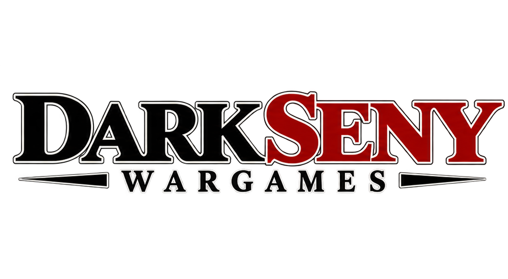
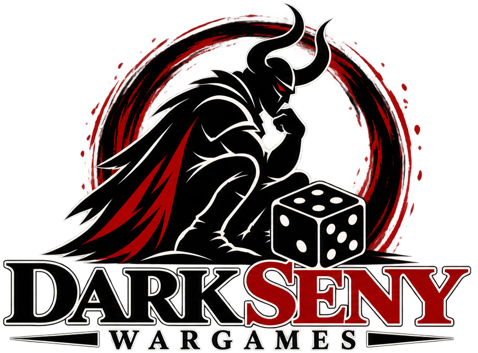
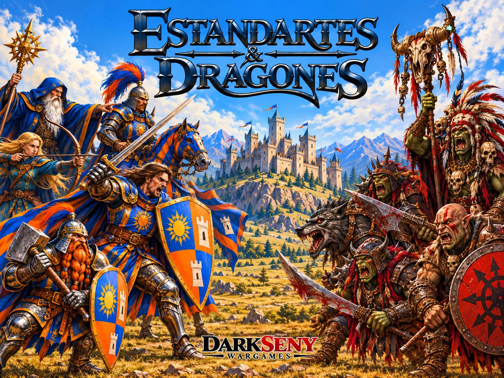
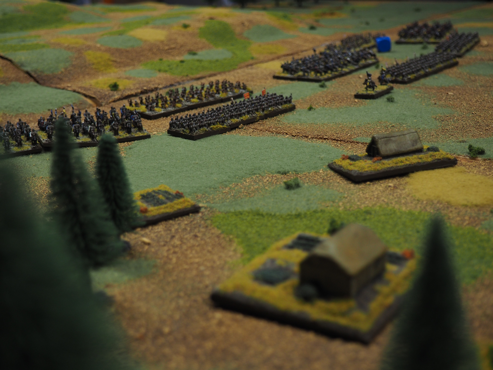

More Gaming.
Less Headache.
Spend less time searching through rulebooks and more time commanding your armies. Streamlined rules, meaningful decisions and tactical depth.


DARKSENY WARGAMES · INDEPENDENT TABLETOP DESIGN
Universal miniature wargames built for tactical depth, creative freedom and unforgettable battles.
Discover our philosophyTHE DARKSENY WAY
We believe the best rules get out of the way and let the battle begin.
Spend less time searching through rulebooks and more time commanding your armies. Streamlined rules, meaningful decisions and tactical depth.
One consistent core system for every army. No endless faction-specific supplements. Learn the rules once and master their possibilities.
Capture the essence of warfare without simulating every minor detail. Believable outcomes, strategic choices and enjoyable gameplay.
Create your own worlds, factions and armies. Our games encourage imagination, narrative freedom and diversity without sacrificing balance.
FROM THE BATTLEFIELD

Epic fantasy battles in under an hour.
Inspired by the classic miniature wargames of the 1990s, Estandartes & Dragones brings tactical battles, narrative storytelling and accessible rules to the tabletop.
Forget traditional points-based army lists. Create unique factions through territories, cultural choices and faction sheets. Build an army with its own identity and fight battles where decisions matter more than complicated exceptions.

INDEPENDENT WARGAME DESIGN
DarkSeny Wargames is an independent tabletop game design project dedicated to creating miniature wargames that are approachable, tactically rewarding and open to imagination.
We draw inspiration from the classics while building systems for the way we love to play today: fewer barriers, more freedom, and battles worth remembering.
One Rulebook. Infinite Battles.STAY IN TOUCH
New projects, game releases and resources are on the way.
Contact details and social channels will be announced here.